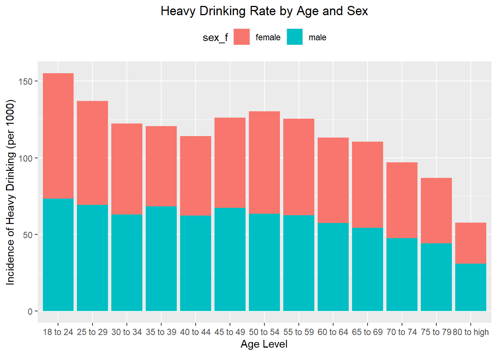
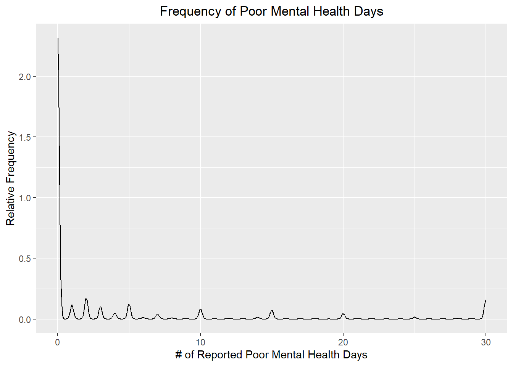
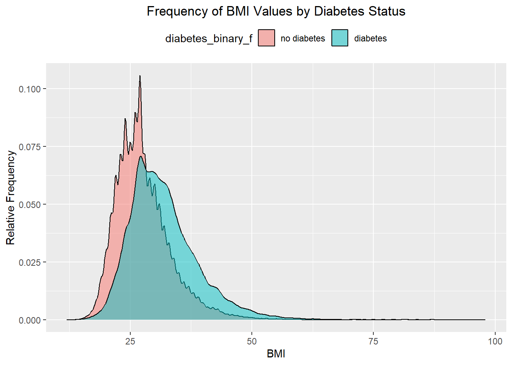

Diabetes is an economically costly disease that can severely disrupt quality of life. The purpose of this project is to identify demographic and behavioral risk factors that could be used to predict diabetes. Such methods could inform clinical practice by alerting clinicians which patients could be at risk. This project’s data was sourced from the CDC’s 2015 Behavioral Risk Factor Surveillance System (BRFSS) and was accessed from www.kaggle.com.
The first task will be to read in and explore the dataset. This includes looking for missing values and creating data tables and plots to investigate the relationship between variables. This will help to determine what data elements are potential risk factors that we should include in our prediction models.
library(tidyverse)
Warning: package 'tidyverse' was built under R version 4.4.3
Warning: package 'ggplot2' was built under R version 4.4.3
Warning: package 'tidyr' was built under R version 4.4.3
Warning: package 'readr' was built under R version 4.4.3
Warning: package 'dplyr' was built under R version 4.4.3
Warning: package 'stringr' was built under R version 4.4.3
Warning: package 'forcats' was built under R version 4.4.3
Warning: package 'lubridate' was built under R version 4.4.3
── Attaching core tidyverse packages ──────────────────────── tidyverse 2.0.0 ──
✔ dplyr 1.1.4 ✔ readr 2.1.5
✔ forcats 1.0.0 ✔ stringr 1.5.1
✔ ggplot2 4.0.0 ✔ tibble 3.2.1
✔ lubridate 1.9.4 ✔ tidyr 1.3.1
✔ purrr 1.0.2
── Conflicts ────────────────────────────────────────── tidyverse_conflicts() ──
✖ dplyr::filter() masks stats::filter()
✖ dplyr::lag() masks stats::lag()
ℹ Use the conflicted package (<http://conflicted.r-lib.org/>) to force all conflicts to become errors
library(psych)
Warning: package 'psych' was built under R version 4.4.3
Attaching package: 'psych'
The following objects are masked from 'package:ggplot2':
%+%, alpha
library(ggplot2)library(future)
Warning: package 'future' was built under R version 4.4.3
Rows: 253680 Columns: 22
── Column specification ────────────────────────────────────────────────────────
Delimiter: ","
dbl (22): Diabetes_binary, HighBP, HighChol, CholCheck, BMI, Smoker, Stroke,...
ℹ Use `spec()` to retrieve the full column specification for this data.
ℹ Specify the column types or set `show_col_types = FALSE` to quiet this message.
#convert col names to lower case for easy referencecolnames(diabetes) <-tolower(colnames(diabetes))
We will assign factors to categorical variables for ease of interpretation.
Create Factors
diabetes <- diabetes |>mutate(diabetes_binary_f =factor(diabetes_binary, levels =c(0,1),labels =c("no diabetes", "diabetes")), highbp_f =factor(highbp, levels =c(0,1),labels =c("no high BP", "high BP")),highchol_f =factor(highchol, levels =c(0,1),labels =c("no high cholesterol", "high cholesterol")),cholcheck_f =factor(cholcheck, levels =c(0,1),labels =c("no cholesterol check in 5 years", "yes cholesterol check in 5 years")),smoker_f =factor(smoker, levels =c(0,1),labels =c("no", "yes")), stroke_f =factor(stroke, levels =c(0,1),labels =c("no", "yes")),heartdiseaseorattack_f =factor(heartdiseaseorattack, levels =c(0,1),labels =c("no", "yes")),physactivity_f =factor(physactivity, levels =c(0,1),labels =c("no", "yes")),fruits_f =factor(fruits, levels =c(0,1),labels =c("no","yes")),veggies_f =factor(veggies, levels =c(0,1),labels =c("no", "yes")),hvyalcoholconsump_f =factor(hvyalcoholconsump, levels =c(0,1),labels =c("no", "yes")),anyhealthcare_f =factor(anyhealthcare, levels =c(0,1),labels =c("no", "yes")),nodocbccost_f =factor(nodocbccost, levels =c(0,1),labels =c("no","yes")),genhlth_f =factor(genhlth, levels =1:5,labels =c("excellent", "very good", "good", "fair", "poor")),diffwalk_f =factor(diffwalk, levels =c(0,1),labels =c("no", "yes")),sex_f =factor(sex, levels =c(0,1),labels =c("female", "male")),age_f =factor(age, levels =1:13,labels =c("18 to 24","25 to 29", "30 to 34", "35 to 39","40 to 44","45 to 49","50 to 54","55 to 59","60 to 64","65 to 69","70 to 74","75 to 79", "80 to high" )),education_f =factor(education, levels =1:6,labels =c("Never attended school or only kindergarten","Grades 1 through 8 (Elementary)","Grades 9 through 11 (Some high school)","Grade 12 or GED (High school graduate)","College 1 year to 3 years (Some college or technical school)","College 4 years or more (College graduate)") ),income_f =factor(income, levels =1:8,labels =c("< 10k","< 15k","< 20k","< 25k","< 35k","< 50k","< 75k","75k+")) )
EDA - Exploratory Data Analysis
Missing Values
We can see below there are no missing values in our dataset for any variable including new factor variables.
# write function to count NAs in a columnsum_na <-function(column) {sum(is.na(column))}# operate function across all dataset columnsna_counts <- diabetes |>summarize(across(everything(), sum_na))na_counts
The first two variables of interest were income and age. One-way, two-way, and grouped bar plots were produced to gather more insight. The frequency distribution plot is immediately the most informative as it shows quickly which age groups and which income bands are the most prevalent in the data set. It is difficult to compare diabetes prevalence among income groups just looking at counts. More meaningful analyses will need to include a rate that can be easily compared across categories.
Age and Income
#diabetes status by income diabetes |>group_by(income_f, diabetes_binary_f) |>summarize(count =n()) |>pivot_wider(names_from = diabetes_binary_f, values_from = count)
`summarise()` has grouped output by 'income_f'. You can override using the
`.groups` argument.
#diabetes status by age and income diabetes |>group_by(age_f, income_f) |>summarize(count =n()) |>pivot_wider(names_from = income_f, values_from = count)
`summarise()` has grouped output by 'age_f'. You can override using the
`.groups` argument.
#distribution of age by income#evident higher income is more common between middle-ageggplot(diabetes, aes(x = age_f , fill = income_f)) +geom_bar() +labs(title ="Frequency Distribution of Age and Income", x ="Age Category", y ="Observations") +theme(plot.title =element_text(hjust =0.5),legend.position ="top", legend.box ="horizontal") +scale_fill_discrete(guide =guide_legend(nrow=1))
Diabetes prevalence
Here a rate of diabetes per 1,000 is calculated to allow for quick determination of what demographic and behavioral risk factors have the highest prevalance of diabetes in our dataset. Apparent in the summaries below is that diabetes is most prevalent in males, aged 70 - 74, with incomes between 0 and 15k, who do not consume alcohol heavily, with high blood pressure (BP).
# A tibble: 13 × 2
age_f PrevalencePer1000
<fct> <dbl>
1 70 to 74 218.
2 75 to 79 213.
3 65 to 69 204.
4 80 to high 185.
5 60 to 64 172.
6 55 to 59 138.
7 50 to 54 117.
8 45 to 49 87.9
9 40 to 44 65.0
10 35 to 39 45.3
11 30 to 34 28.2
12 25 to 29 18.4
13 18 to 24 13.7
# two way contingency table of prevalence by high blood pressure and high cholesteroldiabetes |>group_by(highbp_f, highchol_f) |>summarize(PrevalencePer1000 = (sum(diabetes_binary ==1)/n())*1000) |>arrange(desc(PrevalencePer1000)) |>pivot_wider(names_from = highchol_f, values_from = PrevalencePer1000)
`summarise()` has grouped output by 'highbp_f'. You can override using the
`.groups` argument.
# A tibble: 2 × 3
# Groups: highbp_f [2]
highbp_f `high cholesterol` `no high cholesterol`
<fct> <dbl> <dbl>
1 high BP 297. 167.
2 no high BP 104. 41.9
# two way contingency table of prevalence across mental health and physical health levelsdiabetes |>group_by(smoker_f, hvyalcoholconsump_f) |>summarize(PrevalencePer1000 = (sum(diabetes_binary ==1)/n())*1000) |>arrange(desc(PrevalencePer1000)) |>pivot_wider(names_from = smoker_f, values_from = PrevalencePer1000)
`summarise()` has grouped output by 'smoker_f'. You can override using the
`.groups` argument.
# A tibble: 2 × 3
hvyalcoholconsump_f yes no
<fct> <dbl> <dbl>
1 no 172. 123.
2 yes 66.8 42.7
It seems counter-intuitive that heavy alcohol use is associated with lower diabetes prevalence so more investigation was done to see how high alcohol usage is distributed among other factors like age and income. The two bar charts below show that heavy alcohol use is more common among lower-aged but higher income groups. The previous analysis showed diabetes is more prevalent in older and lower income groups. Heavy alcohol use may not be a worthwhile variable to include in our predictive models.
#view proportion of heavy drinkers by income level, age, and sexalc_inc_df <- diabetes |>group_by(income_f, sex_f) |>summarize(PrevalencePer1000 = (sum(hvyalcoholconsump ==1)/n())*1000)
`summarise()` has grouped output by 'income_f'. You can override using the
`.groups` argument.
ggplot(alc_inc_df, aes(x = income_f , y = PrevalencePer1000, fill = sex_f)) +geom_bar(stat ="identity") +labs(title ="Heavy Drinking Rate by Income and Sex", x ="Income Level", y ="Incidence of Heavy Drinking (per 1000)") +theme(plot.title =element_text(hjust =0.5), legend.position ="top", legend.box ="horizontal") +scale_fill_discrete(guide =guide_legend(nrow=1))
`summarise()` has grouped output by 'age_f'. You can override using the
`.groups` argument.
ggplot(alc_age_df, aes(x = age_f , y = PrevalencePer1000, fill = sex_f)) +geom_bar(stat ="identity") +labs(title ="Heavy Drinking Rate by Age and Sex", x ="Age Level", y ="Incidence of Heavy Drinking (per 1000)") +theme(plot.title =element_text(hjust =0.5), legend.position ="top", legend.box ="horizontal") +scale_fill_discrete(guide =guide_legend(nrow=1))

Mental Health
Next we will investigate if the number of reported “poor mental health days” would be a worthwhile variable to include in the model. We can see that this variable is sparsely populated with values greater than 0 and the diabetes prevalence is not much greater among the group with non-zero poor mental health days.
#general numeric summary of the mental health numeric variable - range is 0-30 with many zero responsesggplot(diabetes, aes(x = menthlth)) +geom_density() +labs(title ="Frequency of Poor Mental Health Days", x ="# of Reported Poor Mental Health Days", y ="Relative Frequency") +theme(plot.title =element_text(hjust =0.5))

#create mental health binary and see percentage with a non-zero response#diabetes is more prevalent diabetes |>mutate(mentalhealth_flag =if_else(menthlth ==0, "none", "1+")) |>group_by(mentalhealth_flag) |>summarize(count =n(),PrevalencePer1000 = (sum(diabetes_binary ==1)/n())*1000) |>mutate("Col%"=round((count/253680)*100,2))
Body-mass index (BMI) is another variable of interest. It has a much more “normal” looking distribution than mental health days and those with BMI values above the median BMI value of 27 have a significantly higher prevalence of diabetes.
#ggplot showing BMI is much more consistently populated throughout the dataset than the mental health variableggplot(diabetes, aes(x = bmi)) +geom_density() +labs(title ="Frequency of BMI Values", x ="BMI", y ="Relative Frequency") +theme(plot.title =element_text(hjust =0.5))
#prevalence per 1000 is more than double for those with BMI above the Mediandiabetes |>mutate(BMI_flag =if_else(bmi >27, "Above Median BMI", "Below Median BMI")) |>group_by(BMI_flag) |>summarize(count =n(),PrevalencePer1000 = (sum(diabetes_binary ==1)/n())*1000) |>mutate("Col%"=round((count/253680)*100,2))
# A tibble: 2 × 4
BMI_flag count PrevalencePer1000 `Col%`
<chr> <int> <dbl> <dbl>
1 Above Median BMI 119286 210. 47.0
2 Below Median BMI 134394 76.7 53.0
Below is a visual demonstration of the difference in BMI distributions among those with diabetes and those without diabetes. It is clear BMI values do differ between those with and without diabetes in our dataset and it is an informative numeric variable to consider.
ggplot(diabetes, aes(x = bmi, fill = diabetes_binary_f)) +geom_density(alpha =0.5) +labs(title ="Frequency of BMI Values by Diabetes Status", x ="BMI", y ="Relative Frequency") +theme(plot.title =element_text(hjust =0.5), legend.position ="top", legend.box ="horizontal") +scale_fill_discrete(guide =guide_legend(nrow=1))

Model Variable Selection
The five predictor variables selected for the prediction modeling step are: blood pressure, sex, income, age, and BMI.